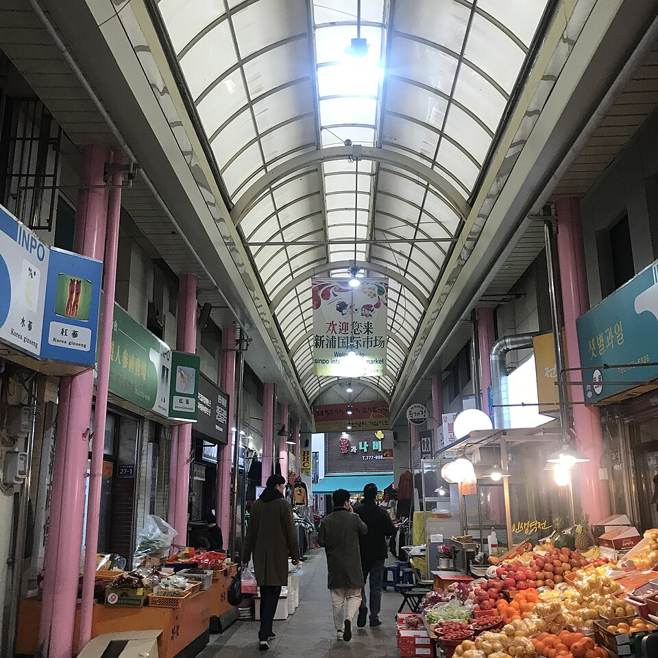
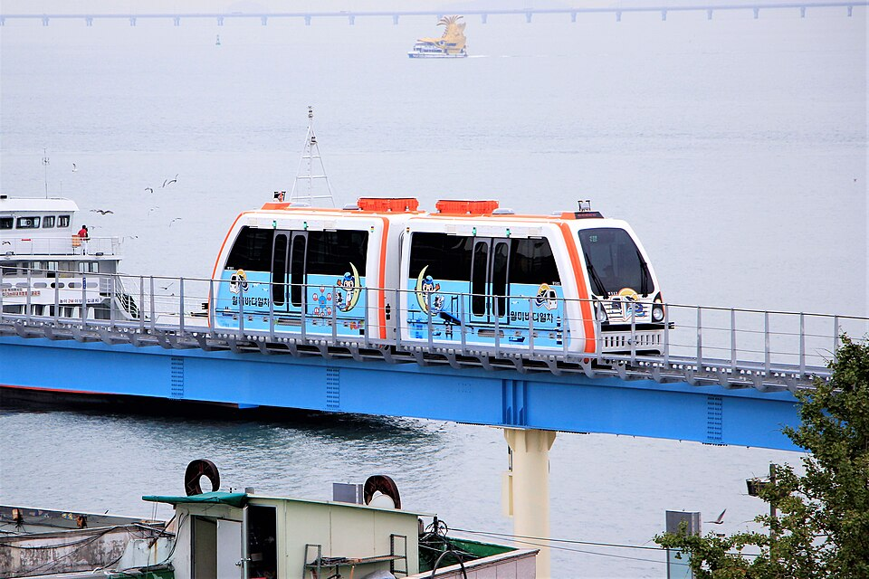
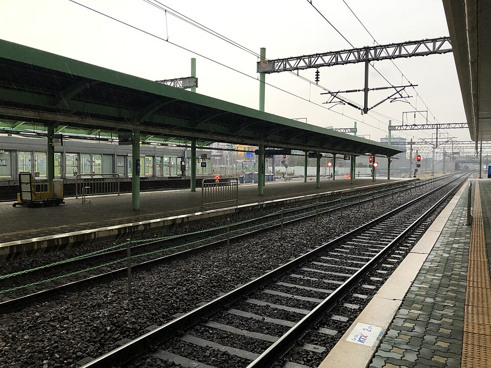
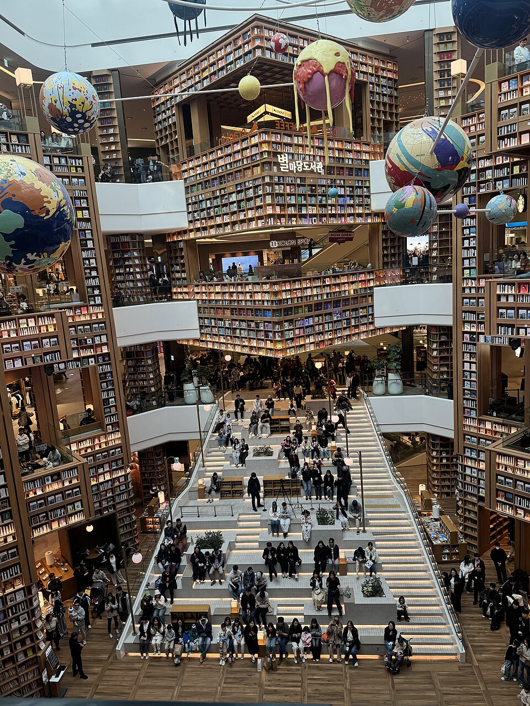
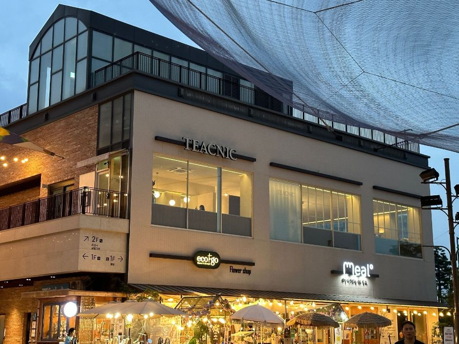
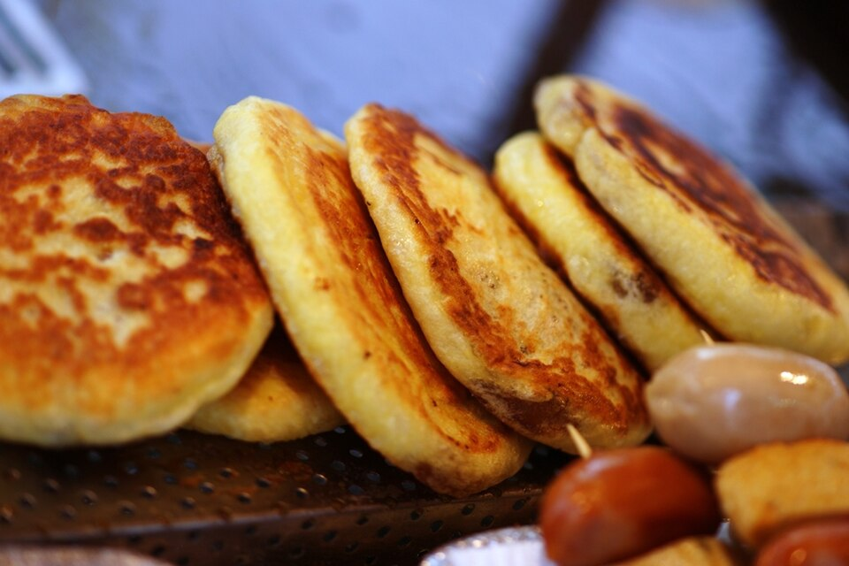

Gyeonggi e Incheon: restaurantes y lugares de los vídeos, de Chinatown de Incheon a la Fortaleza de Hwaseong
Guía de excursiones de un día desde Seúl a Incheon y Suwon, con el restaurante de jajangmyeon, el mercado, la tienda de pollo frito, cafés y paseos de los vídeos.
Gyeonggi e Incheon son destinos fáciles para una excursión de un día desde Seúl, con atractivos que van desde la Fortaleza de Hwaseong en Suwon hasta el Chinatown de Incheon y la isla de Ganghwa. La región también es conocida por su gastronomía: el galbi y el pollo frito de Suwon, el jajangmyeon de Incheon y la anguila a la parrilla de Ganghwa. A continuación, los lugares de los vídeos de Incheon y Suwon, agrupados por ciudad.
Incheon: Chinatown y Wolmido
Estos lugares aparecen en las rutas de Incheon de Incheon Chinatown – Birthplace of Jajangmyeon y Incheon Street Food, Chinatown & Wolmido Park.
Gonghwachun (공화춘)

📍 Gonghwachun · Naver Map · Google Maps
Restaurante en Chinatown especializado en jajangmyeon con salsa de judías negras. Es donde el vídeo sobre Chinatown, presentado como la cuna del jajangmyeon, se detiene para probar el plato.
Parque Freedom (Jayu Park, 자유공원)
📍 Parque Freedom · Naver Map · Google Maps
Parque con una estatua del general MacArthur y buenas vistas. Combina bien con un paseo por Chinatown.
Mercado Internacional Sinpo (신포국제시장)

📍 Mercado Internacional Sinpo · Naver Map · Google Maps
Mercado de comida callejera coreana, presentado en el vídeo de street food de Incheon. Es un buen lugar para picar varios bocados pequeños.
Tartya (타르트야)
📍 Tartya · Naver Map · Google Maps
Tienda de tartaletas de huevo; el vídeo destaca la tartaleta de huevo con arándanos. Práctica como merienda mientras caminas.
Cafetería Channel 12 (채널12 카페)
📍 Cafetería Channel 12 · Naver Map · Google Maps
Cafetería en la azotea que aparece como parada para tomar algo durante el paseo del día.
Isla de Wolmido (월미도)

📍 Isla de Wolmido · Naver Map · Google Maps
Isla frente al mar con un paseo junto a la costa. Como sugiere el título del vídeo, se combina con Chinatown en una ruta de un solo día.
Parque temático Wolmido (월미테마파크)
📍 Parque temático Wolmido · Naver Map · Google Maps
Parque de atracciones en Wolmido, ideal si quieres subirte a algunas atracciones además del paseo junto al mar.
Suwon: Palacio Haenggung, calle del pollo y Gwanggyo
Estos lugares aparecen en Suwon Day Trip: Hwaseong Fortress & Korea's Best Fried Chicken y Suwon – Hwaseong Fortress & Haenggung Palace at Night.
Estación de Suwon (수원역)

📍 Estación de Suwon · Naver Map · Google Maps
La estación de tren principal de Suwon y un punto de partida práctico para el día.
Palacio Hwaseong Haenggung (화성행궁)
📍 Palacio Hwaseong Haenggung · Naver Map · Google Maps
Destacado por su visita nocturna. El vídeo recorre la Fortaleza de Hwaseong de día y vuelve al palacio cuando anochece.
Calle del pollo de Suwon (수원 통닭거리)
📍 Calle del pollo de Suwon · Naver Map · Google Maps
Calle llena de tiendas de pollo frito coreano, el lugar ideal para probar el tongdak, la especialidad de Suwon.
Pollo Daebong (대봉통닭)
📍 Pollo Daebong · Naver Map · Google Maps
Tienda que sirve pollo entero frito al estilo coreano (tongdak), presentada en el vídeo sobre el pollo frito de Suwon.
Starfield Library Suwon (스타필드 수원 별마당 도서관)

📍 Starfield Library Suwon · Naver Map · Google Maps
Una biblioteca enorme dentro del centro comercial Starfield Suwon. Pasear entre sus estanterías altísimas ya es un atractivo en sí mismo.
Alleyway Gwanggyo (앨리웨이 광교)

📍 Alleyway Gwanggyo · Naver Map · Google Maps
Complejo de calles que combina compras y restaurantes.
Dosan Bunsik, Alleyway Gwanggyo (도산분식)

📍 Dosan Bunsik · Naver Map · Google Maps
Local de bunsik dentro de Alleyway Gwanggyo, para probar comida coreana de tentempié.
OUR bakery (아우어 베이커리)
📍 OUR bakery · Naver Map · Google Maps
Panadería ideal para una pausa con pan y café.
Parque del lago Gwanggyo (광교호수공원)

📍 Parque del lago Gwanggyo · Naver Map · Google Maps
Parque con senderos alrededor del lago.
Galleria Department Store Gwanggyo (갤러리아백화점 광교점)
📍 Galleria Department Store Gwanggyo · Naver Map · Google Maps
Grandes almacenes en Gwanggyo, útiles para ir de compras o para hacer una pausa en interior.
G Fassi (지파시)
📍 G Fassi · Naver Map · Google Maps
Heladería de gelato, una parada natural para el postre después de comer.
Ichihachi (이치하치)
📍 Ichihachi · Naver Map · Google Maps
Restaurante japonés que aparece en los vídeos de Suwon.
Consejos para la ruta
Incheon y Suwon están en direcciones distintas desde Seúl, así que resulta más relajado dedicar un día a cada una. En Incheon, empieza con el jajangmyeon de Gonghwachun en Chinatown, disfruta de las vistas en el Parque Freedom, picotea en el Mercado Internacional Sinpo y en Tartya, descansa en la cafetería Channel 12 y, por la tarde, ve a Wolmido para el paseo junto al mar y el parque temático. En Suwon, sal desde la estación de Suwon y pasa el día en Gwanggyo (Alleyway Gwanggyo, el parque del lago, los grandes almacenes y las cafeterías) o en la Starfield Library; por la noche, cena pollo frito en la calle del pollo de Suwon y termina con la visita nocturna al Palacio Hwaseong Haenggung. Gwanggyo y la zona del palacio están algo alejados, así que reserva tiempo suficiente para desplazarte entre ambos.
Lugares de los videos
- Gonghwachun (공화춘) Jajangmyeon con salsa de judías negras Naver Map Google Maps
- Parque Freedom (Jayu Park) (자유공원) Estatua del general MacArthur y vistas Naver Map Google Maps
- Mercado Internacional Sinpo (신포국제시장) Comida callejera coreana Naver Map Google Maps
- Tartya (tartaletas de huevo) (타르트야) Tartaletas de huevo (arándanos) Naver Map Google Maps
- Cafetería Channel 12 (채널12 카페) Cafetería en la azotea Naver Map Google Maps
- Isla de Wolmido (월미도) Paseo junto al mar Naver Map Google Maps
- Parque temático Wolmido (월미테마파크) Parque de atracciones Naver Map Google Maps
- Starfield Library Suwon (스타필드 수원 별마당 도서관) Biblioteca enorme dentro del centro comercial Starfield Suwon Naver Map Google Maps
- Calle del pollo de Suwon (수원 통닭거리) Calle con tiendas de pollo frito coreano Naver Map Google Maps
- Pollo Daebong (대봉통닭) Pollo entero frito coreano (tongdak) Naver Map Google Maps
- Estación de Suwon (수원역) Estación de tren principal de Suwon Naver Map Google Maps
- Alleyway Gwanggyo (앨리웨이 광교) Complejo de calles de compras y restaurantes Naver Map Google Maps
- Dosan Bunsik (Alleyway Gwanggyo) (도산분식 광교 앨리웨이점) Comida coreana de tentempié Naver Map Google Maps
- OUR bakery (아우어 베이커리) Panadería Naver Map Google Maps
- Parque del lago Gwanggyo (광교호수공원) Paseo por el lago Naver Map Google Maps
- Galleria Department Store Gwanggyo (갤러리아백화점 광교점) Grandes almacenes Naver Map Google Maps
- G Fassi (지파시) Gelato Naver Map Google Maps
- Palacio Hwaseong Haenggung (화성행궁) Visita nocturna al palacio Naver Map Google Maps
- Ichihachi (이치하치) Comida japonesa Naver Map Google Maps
Ubicaciones y horarios pueden cambiar: consulta el mapa antes de ir.
Vídeos relacionados


Más artículos
- Seúl en vídeo: comida y lugares de vídeos de viaje recientes
- Gangwon: comida y lugares de los vídeos, desde el puerto de Daepo en Sokcho hasta Chodang en Gangneung
- Lugares de Seúl vistos en la tele: Lotte World Tower a 541 m y el Museo Memorial de la Guerra de Corea
- Jeonnam en pantalla: Teleférico marítimo de Yeosu e isla Odongdo
- Guía de comida de Jeollanam-do: cangrejo de Yeosu, mariscos y banchan de Mokpo y comida de Gwangju vista en programas coreanos de gastronomía
- Guía de comida callejera y mercados de Seúl: qué comer en el mercado Gwangjang, el mercado de pescado Noryangjin y más (según vídeos de tours gastronómicos)